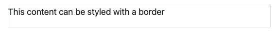
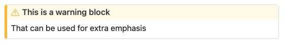

10:00
Quarto
— Creating documents —
Why html documents?
- Easy to share and host online (for instance through GitHub)
- Better accessibility than PDF
- Fast with little extra hassle
- Basic interactivity possible
Divs and Spans
Divs
Add classes, attributes, and other identifiers to content using Divs and Span in [Callout Blocks].

Source: RStudio - HTML Basics
Divs

Source: RStudio - Markdown basics
css and filters
Style documents with css (cascading style sheets)
Particularly useful with divs and spans for special styling
See the Pandoc documentation on Divs and Spans for additional details.
Source: RStudio - HTML Basics
Go to RStudio
Exercise
Write a little bit about your self. A sentence or two about your background and education.
Create a list in your document, listing your favourite foods, at least the top three. Render it.
Make the list ordered. Render it.
Yaml
Most html options can be controlled via yaml
Most options come under the html format tag
be careful of indentation, it matters!
More: RStudio - HTML yaml
Go to RStudio
Exercise
Change the title of the Table of Contents.
Change the location of the Table of Contents.
Turn on Anchored sections, what did that do?
Turn on smooth-scroll, what did that do?
10:00
Go to RStudio
Exercise
Add a call out block with a tip about your favourite drink
Add a horizontal rule
Add a comment. What does that look like?
10:00
Break
05:00
Cross-references
Cross-references
| Type | Label Prefix |
|---|---|
| Figures | fig- |
| Tables | tbl- |
| Equations | eq- |
| Sections | sec- |
| Code listing | lst- |
| Theorem | thm- |
Go to RStudio
Exercise
Take a screenshot of something on your screen, and add the image to your document.
Give the image a caption, and reference it in a piece of text.
10:00
Citation
Adding citations
Can be added via
insert -> citation- Brings up the UI
- The UI can help you find refs, in addition to adding them to the doc.
Can also be added directly with
@References are stored in bibtex files in your project
Citation control
| Markdown Format | Output (author-date format) |
|---|---|
|
Blip blop bloop [see Biswal et al. (2010), pp. 33-35; also , chap. 1] |
|
Blip blop bloop (Biswal et al. 2010, 33–35, 38–39 and passim) |
|
Blip blop bloop (Mowinckel and Vidal-Piñeiro 2019; Biswal et al. 2010). |
|
Mowinckel says blah (2019) |
|
Biswal et al. (2010) says bloop. |
yaml settings
- control file name containing the bibliography
- control citation style with csl file
Redirect reference generation
::: {#refs}
:::References
Biswal, Bharat B., Maarten Mennes, Xi-Nian Nian Zuo, Suril Gohel, Clare Kelly, Stephen M. Smith, Christian F. Beckmann, et al. 2010. “Toward Discovery Science of Human Brain Function.” Proceedings of the National Academy of Sciences of the United States of America 107 (10): 4734–39. https://doi.org/0911855107 [pii];10.1073/pnas.0911855107 [doi].
Mowinckel, Athanasia M., and Didac Vidal-Piñeiro. 2019. “Visualisation of Brain Statistics with r-Packages Ggseg and Ggseg3d.”
Go to RStudio
Exercise
- Add a citation to an important paper in your field searching for its DOI
- Cite it in text using three different ways of controlling citation appearance (1. standard, 2. name & year in parentheses, 3. year only)
- Redirect the reference generation to a specific spot in your document
10:00
Lunch
60:00
Very controlled by yaml
---
title: "My document"
format:
pdf:
toc: true
toc-depth: 2
toc-title: Contents
number-sections: true
colorlinks: true
keep-tex: true
---Source: RStudio - Quarto PDF basics
Go to RStudio
Exercise
- Add some headers, what does that do?
- Add section numbering, what does that do?
10:00
Break
05:00
Academic journal templates
Authors and affiliations
Source: RStudio - Quarto Journal authors
Go to RStudio
Exercise
Adapt the plos template to include the same content as our pdf document
Adapt the yaml to reflect you as an author
10:00
Break
05:00
Presentations
Formats
revealjs — reveal.js (HTML)
pptx — PowerPoint (MS Office)
beamer — Beamer (LaTeX/PDF)
Slides are made by adding headlines
---
title: "9 to 5"
author: "Dolly Parton"
format: revealjs
---
# Tumble out of bed
- I stumble to the kitchen
- Pour myself a cup of ambition
- yawn and stretch and try to come to life
## Jump in the shower
- the blood starts pumpin'
- Out on the street
- the traffic starts jumpin'Or adding horizontal rules (no header)
---
title: "9 to 5"
author: "Dolly Parton"
format: revealjs
---
# Tumble out of bed
- I stumble to the kitchen
- Pour myself a cup of ambition
- yawn and stretch and try to come to life
---
- Jump in the shower
- the blood starts pumpin'
- Out on the street
- the traffic starts jumpin'Go to RStudio
Exercise
- Adapt the remaining of the document so that you have distinct slides for all content
- Make a slide without a header
- Make a slide with two columns of content
10:00
Break
05:00
Getting more help
Awesome quarto - Curated list of Quarto talks and websites
Quarto tag - RStudio Community
Athanasia Monika Mowinckel

- Staff scientist /
Research Software Engineer at LCBC-UiO - PhD in cognitive psychology
- Software Carpentry &
RStudio tidyverse Instructor
- R-Ladies Oslo &
R-Ladies Global team